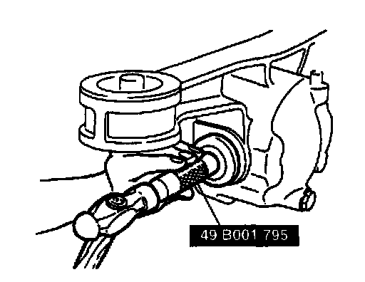

Seals and Gaskets: Service and Repair
OIL SEAL REPLACEMENT1. On level ground, jack up the vehicle and support it on safety stands.
2. Drain the differential oil.
Note:
- For easier installation, do not depress the brake pedal after removing the brake caliper component.
3. Remove the brake caliper component, then suspend the brake caliper component by using a rope.
4. Remove the lower arm installation bolt and nut.
Note:
- If the drive shaft will not come out of the rear hub support easily, install a discarded nut onto the drive shaft so that the nut is flush with the end of the drive shaft. Tap the nut with a copper hammer to loosen the drive shaft from the wheel hub.
5. Pull the rear hub support from the drive shaft.
6. Remove the drive shaft from the differential.
7. Remove the oil seal.

8. Apply lithium-based grease to the new oil seal lip and install it by using the SST.
9. Install a new clip onto the drive shaft.
10. Install the lower arm installation bolt and nut.
Tightening torque 47-66 Nm (4.7-6.8 kg-m, 34-49 ft. lbs.)
11. Install the brake caliper component.
Tightening torque 50-68 Nm (5.0-7.0 kg-m, 37-50 ft. lbs.)
12. Add the specified oil.
13. Adjust the rear wheel alignment.